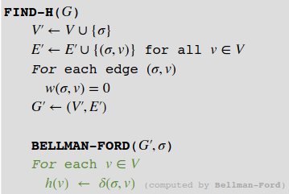

Notes deel 2
Table of Contents
- 1. Divide and Conquer
- 2. Recursief programmeren
- 3. Dynamisch Programmeren
- 4. Greedy algorithms
- 5. Graphs
- 6. Single source shortest path
- 7. All pair shortest paths
- 8. Matchings
- 9. Flow and cuts
- 10. Amortized analysis
- 11. Minimum spanning trees and Union find
- 12. NP-completeness
- 13. Approximation Algorithms
- 14. String Matching
- 15. Gerandomiseerde algoritmes
1. Divide and Conquer
grote O: \(f(n)=O(g(n))\) als er een constante c bestaat zdd voor iedere \(n\ge n_0\) geldt dat \(f(n)\le c*g(n)\)
- \(f(n)=O(g(n))\): f(n) is asymptotisch hoogstens g(n)
- \(f(n)=\Omega(g(n))\): f(n) is asymptotisch minstens g(n)
- \(f(n)=\Theta(g(n))\): f(n) is asymptotisch gelijk aan g(n)
- \(f(n)=o(g(n))\): f(n) is asymp. ’strict kleiner’ dan g(n)
- \(f(n)=\omega(g(n))\): f(n) is asymp. ’strict groter’ dan g(n)
1.1. Divide and Conquer : in het algemeen
- Divide: splits in deelproblemen
- Conquer: los deelproblemen recursief op
- Combine: voeg deeloplossingen samen tot oplossing hele probleem
- Basisgeval: niet vergeten
if input is 'klein' then los direct op (basisgeval) else splits in deelproblemen los deelproblemen recursief op oplossingen deelproblemn samenvoegen
- Doe geen overbodig werk
- Bijv.: iedere keer sorteren, arrays kopiëren
- Denk goed na over je combine-stap
- Gebruik hulpwaarden!
- Soms kan het handig zijn om de invoer in meer dan twee stukken te splitsen
- Zie bijvoorbeeld Selection-algoritme (boek 9.3)
1.2. Correctheid: inductie
- Bewijs dat basisgeval correct is
- Inductiehypothese: algoritme werkt voor alle kleinere invoeren
- Inductiestap:
- Deelproblemen hebben kleinere invoeren en worden dus correct opgelost (IH)
- Oplossingen van deelproblemen worden correct samengevoegd
1.3. MergeSort
Sorteer array van getallen
- Divide: splits array in twee helften
- Conquer: sorteer helften
- Combine: voeg gesorteerde lijsten samen tot één gesorteerde lijst
- Pak telkens kleinste element uit twee lijsten
- Basisgeval: array heeft grootte 1
MergeSort(int[] X, int a, int b) if b-a == 1 then return MergeSort(X, a, (a+b)/2) MergeSort(X, (a+b)/2, b) Merge(X, a, (a+b)/2, b)
1.3.1. Correctheid Mergesort
- Gebruik inductie!
- Basisgeval: lijst van 1 element altijd gesorteerd
- Inductiehypothese: Algoritme sorteert correct voor alle arrays met minder dan n elementen
- Inductiehypothese: Algoritme sorteert correct voor alle arrays met minder dan n elementen
- Inductiestap: Invoer is een array met n elementen
- Twee helften worden correct gesorteerd (IH)
- Merge werkt correct (Apart bewijs)
1.3.2. Looptijd
- MergeSort(int[] X, int a, int b) O(1)
- if b-a == 1 then return T(n)
- MergeSort(X, a, (a+b)/2) T(n/2)
- MergeSort(X, (a+b)/2, b) T(n/2)
- Merge(X, a, (a+b)/2, b) O(n)
Recurrente betrekking: T(n) = 2T(n/2) + O(n)
1.4. Oplossen recurrente betrekking
1.4.1. Subsitutie
- Inductiebewijs!
- Gegeven recurrente betrekking T(n), doe een ‘goede gok’ van de oplossing
- Tip voor de gok: schrijf de recurrente betrekking een aantal stappen of geheel uit
- Kijk of je hieruit iets kunt afleiden
- Houd het simpel
- Voeg extra termen/constantes toe indien nodig
Zorg ervoor dat je je subsitutie doet met expliciete constanten. (dus geen \(O()\)).
- Pas na je inductie-bewijs schat je af met \(O()\)
- Voorbeeld
- Voorbeeld: T(n) = T(n/2) + 1; T(1)=0
- Gok: T(n) = log n. Gebruik nu inductie!
- Basis: n=1: T(1) = 0; log n = 0. Correct!
- IH: voor alle n’ < n geldt T(n’) = log n’
- Stap: T(n) = T(n/2)+1 = log(n/2) + 1 = log n
- Het bewijs volgt dus uit inductie
MergeSort:
- \(T(n)=2T(n/2)+c\ n;\ T(1)=c'\)
- Herinner: MergeSort in \(O(n\log n)\)
- Gok: \(T(n)\le d\ n\log n\) voor te kiezen \(d (d\ge c'+c)\)
- Gebruik inductie. Basis: \(n=2\)
- \(T(2)\)
- \(d\ n\log n = 2d\)
- Als \(d\) tenminste \(c'+c\), dan is \(T(2)\le 2d\)
- Inductiehypothese: \(T(n')\le d\ n'\log n'\) voor alle \(n'
- Stap:
\[T(n)=2T(n/2)+cn \] \[\le 2d \frac n 2 \log \left(\frac n 2\right) + cn\] \[=d\ n\left ( (\log n)-1\right)+cn\] \[=d n \log n - dn + cn\]
- Als \(d\ge c\), dan is \(T(n)\le d\ n \log n\)
1.4.2. Recursieboom

- O(n) per niveau. Hoeveel niveaus?
- Halveren tot grootte 1: n/2i=1 => i = log n
- O(n log n) tij
1.4.3. master theorem
Uit het book van vierde editie, dit is de beste volgensmij
- Stel \(a>0\), \(b>1\), \(g(n)\) een functie
- Dan lost \(T(n)= a\ T(n/b)+g(n)\) op tot:
- \(\Theta (n^p)\) als \(g(n)=O(n^e)\) voor \(e
- \(\Theta (n^p \log^{k+1}n)\) als \(g(n)=\Theta(n^e\log ^k n)\) voor \(k\ge 0\) als \(e=p\)
- \(\Theta(g(n))\) als \(g(n)=\Omega(n^e)\) voor \(e>p\) en er constante \(c<1\) bestaat zdd \(a\ g(n/b)\le c\ g(n)\)
- \(\Theta (n^p)\) als \(g(n)=O(n^e)\) voor \(e
- Hierbij is \(p=\log _b a\)
- Derde editie versie
Iets simpeler, minder compleet
- Stel \(a\ge 1\), \(b>1\), \(g(n)\) een functie
- Dan lost \(T(n)= a\ T(n/b)+g(n)\) op tot:
- \(\Theta (n^p)\) als \(g(n)=O(n^e)\) voor \(e
- \(\Theta (n^p \log n)\) als \(g(n)=\Theta(n^e)\) voor \(e=p\)
- \(\Theta(g(n))\) als \(g(n)=\Omega(n^e)\) voor \(e>p\) en er constante \(c<1\) bestaat zdd \(a\ g(n/b)\le c\ g(n)\)
- \(\Theta (n^p)\) als \(g(n)=O(n^e)\) voor \(e
- Hierbij is \(p=\log _b a\)
2. Recursief programmeren
Los deelproblemen op en voeg oplossingen samen
- Deelproblemen kunnen wel overlappen
- Vaak: alle mogelijkheden proberen
- Bewijs correctheid: inductie
- Werkt voor veel verschillende problemen
- Grootste voordeel bij optimaliseringsproblemen
2.1. Gepast betalen
Optimaliseringsprobleem:
- Je moet deelverzameling/volgorde selecteren die optimaal is
- In welke volgorde levert de postbode pakketjes af in zo kort mogelijke tijd?
Gegeven: positieve gehele getallen \(a_1,...,a_r\) (waarde munten), niet-negatief geheel getal \(b\) (doelbedrag)
Gevraagd: op welke manier kan \(b\) verkregen worden door zo min mogelijk munten van waardes \(a_1,...,a_r\) ?
- Hoeveelheid munten van ieder soort is onbeperkt
- Totale som moet b zijn.
- We zoeken dus de aantallen \(x_1,...,x_r\in N = \{0,1,...\}\) met
- \(\sum^r_{i=1}x_i\cdot a_i=b\)
- en \(\sum_{i=1}^r x_i\) zo klein mogelijk
- Wat is de rij keuzes die leidt tot een oplossing?
- Je kiest uit een aantal mogelijkheden waarvan er tenminste één tot een optimale oplossing leidt
- Identificeer de laatste keuze (top-choice). Die leidt tot een splitsing in een deelprobleem
- Top-choice: de laatste munt die ik geef, zeg een munt van waarde \(a_i\)
- Blijft over: Hoe kunnen we \(b-a_i\) gepast betalen met zo min mogelijk munten?
- Deelprobleem: veralgemeniseer dit, want we weten \(a_i\) en dus \(b-a_i\) niet
- Hoe kunnen we \(c\) gepast betalen met zo min mogelijk munten?
- Deelprobleem: gegeven \(c\) met \(0 \le c \le b\) , hoe kunnen we \(c\) gepast betalen met zo min mogelijk munten?
- Merk op: originele probleem is speciaal geval van deelprobleem (kies \(c = b\))
- Wat is de rij keuzes die leidt tot een oplossing?
- Je kiest uit een aantal mogelijkheden waarvan er tenminste één tot een optimale oplossing leidt
- Identificeer de laatste keuze (top-choice). Die leidt tot een splitsing in een deelprobleem
- Gebruik top-choice en deelprobleem om een recursieve functie te maken
- Let op de basisgevallen
- \(G(c)\) = kleinste aantal munten waarmee we c gepast kunnen betalen
- Basisgeval: \(G(0) = 0\)
- We geven munt van waarde \(a_i\) : \(G(c) = 1+G(c-a_i)\)
- Essentieel: we proberen alle mogelijkheden en nemen de beste
- \(G(c) = \min_i \{ 1 + G(c-a_i) \}\)
- Minimum over alle i z.d.d. \(c \ge a_i\)
2.2. optimaliteitsprincipe
- Hoe weten we dat recursieve functie correct is?
- Gebruik inductie!
- Basisgeval: vaak triviaal (laten we hier achterwege)
- Te bewijzen: als de top-choice gemaakt wordt volgens de optimale oplossing, dan is de optimale oplossing de juiste combinatie van optimale oplossingen van de deelproblemen
- Probleem: gegeven \(c\) met \(0 \le c \le b\), hoe kunnen we \(c\) gepast betalen met zo min mogelijk munten?
- \(T=\{m_1,..,m_k\}\) is optimale oplossing om \(c\) gepast te betalen. Zeg \(m_k\) waarde \(a_i\)
- \(\{m_1,..,m_{k-1}\}\) is een manier om \(c-a_i\) gepast te betalen
- Stel \(D =\{n_1,..,n_{k'}\}\) is optimale oplossing van deel- probleem om \(c-a_i\) gepast te betalen. Dan \(k' \le k -1\)
- Laat \(T' = \{n_1,..n_{k'},m_k\}\). \(T'\) nog steeds een oplossing om \(c\) gepast te betalen
- \(T=\{m_1,..,m_k\}\) , \(T' = \{n_1,..n_{k'},m_k\}\)
- \(T\) en \(T'\) zijn een oplossing om \(c\) gepast te betalen
- \(|T'| = k' +1 \le k = |T|\), want \(k' \le k -1\).
- \(|T'| \ge |T|\), want \(T\) is optimaal
- Dus \(|T'|=|T|\)
- Dus optimale oplossing opgebouwd uit optimale oplossing voor deelprobleem
- Optimaliteitsprincipe bewezen
Uitwisselargument:

2.3. Samenvatting
- Wat is de rij keuzes die leidt tot een oplossing?
- Je kiest uit een aantal mogelijkheden waarvan er tenminste één tot een optimale oplossing leidt
- Identificeer de laatste keuze (top-choice). Die leidt tot een splitsing in een deelprobleem
- Gebruik top-choice en deelprobleem om een recursieve functie te maken
- Let op de basisgevallen
- Optimaliteitsprincipe: Als de top-choice gemaakt wordt volgens de optimale oplossing, dan is de optimale oplossing de juiste combinatie van optimale oplossingen van de deelproblemen
3. Dynamisch Programmeren
Twee mogelijkheden:
- Memoisatie: kijk of we ‘t al eerder hebben uitgerekend – zo ja, geef dat antwoord; zo nee: reken uit en sla antwoord op in datastructuur (bijvoorbeeld array of hashtabel)
- ’Klassiek’ DP: vul datastructuur met antwoorden voor deelproblemen, zodat nodige gegevens al eerder zijn berekend
3.1. Driehoek van Pascal DP
3.2. Klassiek DP
- Initialiseer array
- Vul de basisgevallen in
- Vul de array, lettend op de opvul-volgorde
- Vul van basis naar eind-antwoord
- Return oplossing
3.2.1. Ontwerp
- Wat is de rij keuzes die leidt tot een oplossing?
- Je kiest uit een aantal mogelijkheden waarvan er tenminste één tot een optimale oplossing leidt
- Identificeer de laatste keuze (top-choice). Die leidt tot een splitsing in een deelprobleem
- Gebruik top-choice en deelprobleem om een recursieve functie te maken
- Let op de basisgevallen
- Optimaliteitsprincipe: Als de top-choice gemaakt wordt volgens de optimale oplossing, dan is de optimale oplossing de juiste combinatie van optimale oplossingen van de deelproblemen
- Vind de juiste berekeningsvolgorde
- Memoisatie volgt uit recursieve functie
- Opletten bij DP algoritme
- Eventueel: geheugenbesparing of oplossing vinden
Technieken die vaak werken
- Terugredeneren van antwoord
- Bijhouden van extra informatie die vertelt waar je vandaan komt, of dit later zien aan de opgeslagen informatie
Versies van problemen
- Optimalisatieprobleem
- Wat is het kleinste aantal munten waarmee \(b\) betaald kan worden met munten van waardes \(a_1, ... , a_r\)? (Antwoord is een getal.)
- Constructieprobleem
- Op welke manier kan \(b\) betaald worden met zo min mogelijk munten van waardes \(a_1, ... , a_r\)? (Antwoord is een serie van waardes van munten.)
- Beslissingsprobleem
- Vb: kan \(b\) betaald worden met hooguit i munten van waardes \(a_1, ... , a_r\)? (Antwoord is: JA of NEE.)
3.2.2. Constructieversies
- Doe eerst DP algoritme voor beslisprobleem of optimalisatieprobleem
- Eventueel met bijhouden van extra gegevens
- Construeer antwoord achterstevoren door gebruik te maken van de opgeslagen en door het DP algoritme berekende informatie
- Bijvoorbeeld: hoe werd het minimum/maximum berekend?
zie slides vanaf 44 voor voorbeeld
3.2.3. Voorbeeld: gepast betalen:
- \(G(c) = \min_i \{ 1 + G(c-a_i) \}\)
- Minimum over alle i z.d.d. \(c \ge a_i\)
- Basisgeval: \(G(0) = 0\)
Method \(Gepast(a_1,..,a_r,b)\)
- Maak array G[0..b]; G[0] = 0; G[1..b] = ∞
- for c = 1 to b do // nu het minimum berekenen
- for i = 1 to r do
- if \(c \ge a_i\) then \(G[c] = \min\{G[c], 1+ G[c-a_i] \}\)
- for i = 1 to r do
- return G[b]
3.3. Keuzes/deelproblemen identificeren
Let goed op de probleemstelling
- Zit er een volgorde die gebruikt kan worden?
- Wat wil je optimaliseren
Identificeer de top-choice
- Welke beslissingen kan het optimum nemen?
Bekijk de situatie die overblijft na een top-choice
3.4. Traveling Salesman problem
Een handelsreiziger moet n steden bezoeken:
- Bezoek elke stad 1 keer
- Elk paar steden v, w heeft een afstand \(d(v,w)\)
- Beginstad = eindstad
- Wat is de kortste route?
Top choice: laatste bezochte adres
Deelprobleem hier is minder makkelijk, je kan niet zeggen hoe kan ik het snelste de eerste i adressen bezoeken. Snelste route voor eerste drie adressen hoeft geen deel te zijn van een snelste route voor eerste vier adressen.
Deelprobleem: Gegeven een verzameling adressen \(s\) en een adres \(k\), wat is de minimum tijd om alle adressen in \(S\) te bezoeken, beginnend bij depot en eindigend bij adres \(k\)?
- Handige notatie: \(s\) is alle adressen die we bezoeken tussen het depot en het bezoek aan adres \(k\), dus we bezoeken \(s\cup\) {depot, k}
Merk op: algemene probleem is speciaal geval van deelprobleem
- Bekijk optimale oplossing en kies k als laatste adres en S = {1,…,n}\{k}
\(A(S,k) =\) minimum tijd van trip als we beginnen in depot, dan alle adressen in S bezoeken (met de beste volgorde) en dan naar adres k gaan
Neem beste optie van alle mogelijke laatst bezochte adressen k
\(\min\{A(V-\{k\},k)+ d(k,depot)|k\in V\}\)
- \(d(k,depot)\) geeft tijd voor laatste stap van k terug naar depot
Method HK(V = {depot, 1, ..,n}) Maak een hashtabel Q, initieel leeg best = ∞ forall 𝑘 ∈ {1, … , 𝑛} do // loop door alle depots // zie k als eindpunt van route, doe daar bij de afstand van k tot depot best = min{ best, HKrec(𝑉 − {𝑘}, 𝑘) + d(𝑘, depot) } return best // functie om afstand van route adress g tot depot te bereken door S lopend Method HKrec(𝑆, 𝑔) // volg recursieve functie if 𝑆, 𝑔 ∈ 𝑄 then return 𝑄(𝑆, 𝑔) else if 𝑆 = ∅ then return 𝑑 𝑑𝑒𝑝𝑜𝑡, 𝑔 else 𝑎𝑛𝑡𝑤 = ∞; for 𝑘 ∈ 𝑆 do // recursieve call, afstand van k door de rest plus afstand tussen k en g 𝑎𝑛𝑡𝑤 = min{𝑎𝑛𝑡𝑤, HKrec (𝑆 – 𝑘 , 𝑘) + 𝑑 (𝑘, 𝑔) } 𝑄(𝑆, 𝑔) = 𝑎𝑛𝑡𝑤 return 𝑎𝑛𝑡𝑤
Andere aanpak: hier gaan we een soort van vanaf het depot rekenen en telkens alle afstanden bijhouden
Reken alle ùê¥(ùëÜ, ùëî) uit:
- Eerst alleen ùëÜ = ‚àÖ
- Dan alle ùëÜ met √©√©n adres
- Dan alle ùëÜ met twee adressen
- Dan alle ùëÜ met drie adressen
- Etc
Of representeer ùëÜ als integer ‚Ķ
Practisch: reken bij elke verzameling de “opvolgende oplossingen” uit (met heuristieken om stukken die nooit optimaal kunnen zijn weg te laten)
3.4.1. Complexiteit
- Tijd: we kijken naar alle deelverzamelingen: 2ùëõ
- Per verzameling ùëõ keuzes voor laatste adres
- Per combinatie ùëõ tijd, want kijken naar elk een-na- laatste adres:
- \(O(2^n n^2)\)
- Generalisatie: bijvoorbeeld: hoeveel adressen kan je binnen ùëò tijd bezoeken? (openingstijd van een winkelgebied?)
4. Greedy algorithms
Greedy algorithms are those which build the solution step-by-step, making the optimal choice at every step.
To show the correctness of the greedy strategy, one needs to prove the following:
- Greedy Choice Property: We need to prove that the greedy choice that we make, indeed yields an optimal solution. To do so, we show that there exists some optimal solution that contains the best option as per our greedy strategy.
- Optimality Principle: To demonstrate optimal substructure of the problem, we need to show that if we combine the greedy choice with the optimal solution of the subproblem we are left with, we get the optimum solution to the original problem.
To show if a problem has the greedy choice property consider an optimal solution that does not contain your greedy choice.
- Exchange Argument: Modify the solution by replacing some part of it with your greedy choice. Show that the modified solution preserves optimality.
4.1. Fractional Knapsack problem, Interval Scheduling en Huffman’s codes
Niet super boeiend best simple, bewijs is wel handig om even door te lezen in de lecture notes.
5. Graphs
5.1. Graph representation
\(G=(V,E)\)
- V: set of vertices in the graps (dots)
- \(n=|v|\)
- Example : \(V={a,b,c,d,e}\)
- E: set of edges in the graph (lines)
- \(m=|E|\)
- Example: \(E=\{(a, b), (a, c), (b, c), (c, d)\}\)
In directed graphs, the edges are ordered set. That is, \((u,v)\ne (v,u)\)

Weighted graph: the edges can be associated with weights.
Terminologies:
5.2. Adjacency list
For each vertex, store its neighbors in a linked list
- Space complexity: \(O(|E|)\)
- Querying complexity: \(O(max\ degree)\)

5.3. Adjacency Matrix

Use a \(|V|\times |V|\) matrix A such that
- \(A(u,v)=1\) iff \((u,v)\in E\)
- \(A(u,v)=0\) otherwise
- Space complexity: \(O(|V|^2)\)
- Querying complexity: \(O(1)\)
- For directed graphs, A is not necessarily symmetric
5.4. Adjacency List and Adjacency Matrix
| Adjacency list | Adjacency matrix | |
|---|---|---|
| Space | \(O(V+E)\) | \(O(V^2)\) |
| Add an edge | \(O(1)\) | \(O(1)\) |
| Delete an edge | \(O(max degree) = O(V)\) | \(O(1)\) |
| List all neighbors of a vertex | \(O(# of neighbors) = O(V)\) | \(O(V)\) |
| Check adjacency of vertices u and v | \(O(max degree) = O(V)\) | \(O(1)\) |
| List all edges | \(O(E)\) | \(O(V^2)\) |
5.5. Depth-First Search
Procedure DFS-VISIT(u)
Mark u as discovered
time ← time + 1
d[u] ← time
For each neighbor v of u
If v is not-discovered
π[v] ← u
DFS-VISIT(v)
Mark u as finished
time ← time + 1
f[u] ← time
- For each of the vertices v, we take information:
- \(d[v]\): discover time, timestamp when is first discovered
- \(f[v]\): finish time, timestamp when the search finishes examining \(v\)’s adjacency list
- \(d[v]
- \(d[v]
- \(\pi[v]\): the predecessor of \(v\) when we traverse the graph
5.5.1. Parenthesis Theorem
In any DFS of a graph \(G=(V,E)\), for any two vertices \(u,v\in V\), there are three cases of the positions of u and v in the depth-first forest
- \(u\) is a descendant of \(v\)
- \([d[u]], f[u]]\) is contained entirely within \([d[v],f[v]]\)
- \(v\) is a descendant of \(u\), or
- \([d[v],f[v]]\) is contained entirely within \([d[u],f[u]]\)
- neither \(u\) nor \(v\) is a descendant of the other
- \([d[u],f[u]]\) and \([d[v],f[v]]\) are entirely disjoint
Theorem: In any DFS of a graph \(G=(V,E)\), for any two vertices \(u,v\in V\), \(v\) is a proper descendant of \(u\) in the depth-first forest if and only if \(d[u]
5.5.2. Edges Classification
According to the Depth-first forest \(G_\pi(V,E_\pi)\), each edge \((u,v)\in E\) is on of for type
- Tree edges: the edges in \(E_\pi\)
- (u,v) is a tree edge if v was first discovered by exploring edge (u,v)
- Back edges: pointing from a descendant to an ancestor
- Forward edges: non-tree-edges pointing from an ancestor to a descendant
- Cross edges: all other edges
5.5.3. White-Path Theorem
In a depth-first forest of a graph \(G\), vertex \(v\) is a descendant of \(u\) vertex if and only if at the time that \(u\) is discovered by DFS, vertex \(v\) can be reached from \(u\) along a path consisting entirely of white vertices.
Application: Cycle Detection
- Given a directed graph \(G\), there is a directed cycle if and only if a DFS of \(G\) yields at least one back edge.
5.6. Directed Acyclic Graph
A directed acyclic graph (DAG) is a directed graph which does not have any directed cycles
- So no back edges in the graph
A topological sort of a DAG is a linear ordering of all its vertices such that for any edge \((u,v)\in E\), u appears before v in the ordering
Procedure Topological-Sort(G) Linked list L_sort <- NIL Call DFS(G) As each vertex v is finished Put v to the front of L_sort Return L_sort
Same time complexity as DFS
5.7. Strongly connected component
A strongly connected component of a directed graph \(G=(V,E)\) is a maximal set of vertices \(C\subseteq V\) such that for every pair of vertices u and v in C, there is a path from u to v and a path from v to u. That is, u and v are reachable from each other.
6. Single source shortest path
The problem:
- A directed graph \(G=(V,E,w)\)
- Where every edge \((u,v)\in E\) has a weight \(w(u,v)\)
- A path P is a sequence of vertices \(v_0, ..., v_k\) path that for any \(i \in [1,k],\ (v_{i-1},v_i)\in E\).
- The weight of a path P, denoted by w(P), is defined by \(\sum^k_{i=1}w(v_{i-1},v_i)\)
- We denote te shortest distance between \(u,v \in V\), \(\delta(u,v)\) by \(\min \{w(P)|P\text{ is a path from u to v}\}\)
- The single-source shortest paths problem is to find the shortest distance from the source to any vertex \(v\in V\)
In the next paragraphs the following variables are used:
- \(d[v]\): the distance from the source s to it
- \(\pi [v]\): the predecessor of v when we traverse the graph
6.1. Breadth-First Search: unweighted graph or graph with uniform weight
BFS keeps a queue of visited virtices. In each round, BFS dequeues a vertex from the queue and enqueues all its neighbors that are not discovered yet.
Time complexity of \(O(|V|+|E|)\): every vertex is enqueued and dequeued once, and each edge is checked once.
6.2. Tense edges and relaxation
\(d[v]\) is the temporal estimation (initially \(\infty\)) of the shortest distance from s to v. We keep updating it when we find an shorter distance from s to v.
An edge \((u,v)\) is tense if \(d[v] > d[u] + w(u,v)\)
We relax a tense edge by udating the value of \(d[v]\) to \(d[v]+w(u,v)\)
Throughout the single-source shorest paths algoriths, we keep relaxing tense edges if there are any.
Using these concept we can rewrite BFS like this
6.3. Weighted DAG single source shortest path

Also time complexity of \(O(|V|+|E|)\)
6.4. Dijkstras algorithm: weigthed graph with non-negagive weight
It can be looked at as bfs but by replacing the normal queue with a priority queue
Time complexity: \(O(|V|^2)\), this can be improved to \(O(|E|+|V|\log|V|)\)
6.5. Bellman-Ford: weigthed graph without negative cycle
Time complexity is \(O(|V||E|)\): There is no shortest path with more than |V | − 1 edges. Therefore, the Bellman-Ford algorithm takes at most |V | − 1 rounds, and each round takes at most |E| checking and relaxation.
7. All pair shortest paths
We want to know the shortest path from every possible source to every possible destination.
The algorithm should return \(\delta(u,v)\) for any pairs of vertices \(u\) and \(v\).
7.1. Lots of single sources
A naive approach is simply running a single source algorithm on every vertex.
For graphs with non negative weights Dijkstra can be used. For the general case Bellman-Ford can be used.
For dijkstra this will result in a timecomplexity of \(O(|V|^2\log |V|+|V||E|)\) using the fibonacci heap.
For Bellman-ford the time-complexity is \(O(|V|^2|E|)=O(|V|^4)\)
7.2. DP by length
We define \(dist^{(l)}_{uv}\): the shortest distance from vertex u to vertex v, containing at most l edges
This has a complexity of: \(O(|V|^2|E|)=O(|V|^4)\)
This algorithm can be improved upon by doubling the amount of involved edges each round.

7.3. Floyd-Warhall algorithm
This is also a dynamic programming base approach.
Number the vertices \(1,2,3,...,|V|\)
\(dist^{(k)}_{uv}\): the shortest distance form vertex u to vertex v, only going through vertices \(\{1,2,3,...,k\}\) (doesn’t have to go through all vertices.)
Time complexity: \(O(|V|^3)\)
Uitleg hoe dit algoritme werkt in het boek
7.4. Johsons algorithm
We want to reweigh the edge so that there are no negative weights. Then just run Dijkstra’s algorithm again on every vertex again.
We can’t simply add some constant to each weight, this doesn’t always preserve the same longest path.
The new weights \(w'(u,v)\) for any edge \((u,v)\) should satisfy the following properties:
- For all edges (u,v), the new weight \(w'(u,v)\) is non-negative
- P is the shortest path from s to t using the original weights if and only if P is the shortest path from s to t in the original graph with new weights
- For all pair of vertices \(s,t\in V\) and a shortest path P from s to t, \(w(P)=\delta(s,t)\) if and only if \(w'(P)=\delta'(s,t)\)
The re-weighting:
- Every vertex v has a value \(h(v)\)
- The new weight: \(w'(u,v)=h(u)+w(u,v)-h(v)\)
Proof that this preserves the shortest path can be found in the slides.
H is defined by adding a vertex to the graph that has an outgoing edge to each other vertex. Then bellman ford is ran from the new vertex, the h-value is the shortest path from the new vertex.

After calculating the h-values we can reweight all edges, run dijkstra and finally return the weights to the old value.
8. Matchings
chapter 25
- Book defines flow as something between vertices, instead as something belonging to an arc
- Connections between each vertex in the book kindoff
8.1. Matchings
Matching: Subset of edges that do not have a common endpoint.
Matching M is maximum if there is no matching with more number of edges.
A maximal matching is a matching M to which no other edges can be added.
To create a maximum matching we use a greedy algorithm, given a non maximum matching create a bigger matching from it.
Given a matching M in an undirected graph \(G=(V,E)\), an M-alternating path is a simple path whose edges alternate between being in M and being in \(E-M\).
M-augmenting path (sometimes called an augmenting path with respect to M ): an M-alternating path whose first and last edges belong to \(E-M\) (not in the matching). This means the first and last vertex are also unmatched.
In the slides the above two definition are given as the same (both the same as M-augmenting)
Larger matching M’: exchange edges of M-augmenting path P
- \(e\in P \setminus M\) (edges in the path but not in the matching): put in M’
- \(e\in P\cap M\) (edges in both the path and the matching): don‚Äôt put in M’
- Other edges of M: put in M’
Doing this is safe:
- Endpoints of P are not matched by M, but are matched in M’
- Every other vertex is/remains incident on at most 1 edge of M’
Result is larger!
- Majority of edges of P were not in M, but are in M’
Matching M in graph G is maximum if and only if there is no M-augmenting path in G. (proof in slides and lecture notes)
#+beginsrc python Algorithm MaxMatching(G) M = {} while G has M-augmenting path P do exchange edges of P (augment M) return M #+endsrc c
8.2. Matchings in bipartite graphs
Bipartite graphs are those whose vertices can be partitioned into two sets such that no edge of the graph has both its end-points in the same set.
Bipartite graph is a graph whose vertices can be divided into two disjoint and independent sets \(U\) and \(V\)
- Every edge connects a vertex in \(U\) to one in \(V\).
Finding an *M-augmenting path*:
- Since the end points of an M-augmenting path must be unmatched, we start from an unmatched vertex.
- If possible, we cross over to the opposite side using an edge not in M , and then come back to the same side using an edge in M.
- We repeat the process until we either reach an unmatched vertex or conclude that no M-augmenting path exists..
- An M -augmenting path has an odd number of edges.
- So, if we start with an unmatched vertex on the left, we end in an unmatched vertex on the right and vice-versa.
To find an M-augmenting path, we use an auxillary graph:
- direct the edges of the bipartite graph as follows:
- If \(e\in M\), direct it from right to left.
- If \(e \notin M\), direct it from left to right.
Now we can do a DFS from every unmatched vertex on the left until we have found a path that ends in an unmatched vertex on the right.
We can avoid doing multiple DFS’s by adding a source and sink vertex:
- Add a “source” vertex and add arcs directed from the source to the unmatched vertices on the left.
- We also add a “sink” vertex and add arcs directed from the unmatched vertices on the right to the sink.
- Now, we can run a DFS once to find a path from the source vertex to the sink. It takes \(O(n + m)\) time to find an M-augmenting path using this algorithm
Algorithm FindBipMAugmenting(G, M)
Make directed aux. graph for G as in last slide
Find source-sink path P with DFS in aux. graph
If path P found, then P is a M-augmenting path
No path found? Then M is maximum
Running time: \(O(n+m)\)
Algorithm BipMaxMatching(G) M = {} while P = FindBipMAugmenting(G, M) do exchange edges of P (augment M) return M
Running time: \(O(n(n+m)) = O(nm)\)
8.3. Matchings of different types of graphs
Bipartite graphs
Hopcroft-karp algorithm: \(O(m\sqrt n)\)
Weighted maximum matching
From a graph with weighted edges \(w:E(G)\rightarrow \mathbb{R}\) find matching of largest possible total weight.
In bipartite graphs: make directed auxillary graph.
- set \(length(e)= -w(e)\ if\ e \in E(G)\setminus M\)
- set \(length(e)= w(e)\ if\ e \in M\)
Then find the shortest M-augmenting path.
Finding weigted maximmum matching in bipartite graph: Gabow-Tarjan [1988]: \(O(m\sqrt n \log (nW))\)
Matching on general graphs
Matchings on general paths is much harder, best time complexity is \(O(n^2m)\) Micali-Vazirani [1980], not taught in this course.
Weighted general graphs
Gabow [1990]: \(O(n (m + n \log n))\)
8.4. Stable matching / stable-marriage problem
We add information to each vertex: a ranking of the vertices in the other side.
That is, each vertex in L has an ordered list of all the vertices in R, and vice-versa.
The goal here is to match each vertex in L with a vertex in R in a stable way.
The stable-marriage problem:
- comes from the notion of heterosexual marriage, viewing L as a set of women and R as a set of men.
- Each woman ranks all the men in terms of desirability, and each man does the same with all the women.
- The goal is to pair up women and men (a matching) so that if a woman and a man are not matched to each other, then at least one of them prefers their assigned partner.
- A men and a woman are a blocking pair if they are not matched but each prefers the other over their assigned partner.
- Such a pair prevents a a matching from being stable: unstable
- A stable matching is a matching that has no blocking pairs
- A stable matching is always possible
The Gale–Shapley algorithm: \(O(n^2)\)
9. Flow and cuts
9.1. Flow
A flow network
- A directed graph \(G = (V, A)\)
- For every arc \((u, v) \in A\),
- There is a capacity denoted by \(c(u, v) \ge 0\).
- There are two special vertices called the source and the sink such that all the arcs incident on the source are outgoing and all the arcs incident on the sink are incoming arcs.
- Source: \(s\) arcs incident on the source are outgoing
- Sink: \(t\) arcs incident on the sink are incoming
If we want a network with multiple sources and sinks we add a super sink and a super source such that there are arcs from the super source to every source vertex and arcs from every sink vertex to the super sink.
Flow: A flow in any network \(G=(V,A)\) can be defined as a function \(f:A\rightarrow \mathbb R\) such that it follows the following rules:
- Capacity Constraint: \(f (a) \le c(a)\), for all \(a\in A\)
- Conservation of flow: For every vertex v other than the source and the sink, the total flow going into the vertex equals the flow going out of it.
- That is \(\sum_{u:(u,v)\in A}f((u,v))=\sum_{u:(v,u)\in A}f((v,u))\)
Value of flow: The total value of flow in a given flow network
- \(|f|=\sum_{u:(s,u)\in A}f((s,u))=\sum_{u:(u,t)\in A}f((u,t))\)
- The total sum going from the source or the total sum going into the sink.
Flow can model many practical problems:
- Assignment
- Routing
- Network robustness
Algorithms for finding a maximum value flow:
- Ford-Fulkerson
- Edmonds-Karp
9.2. Bipartite matching as flow
Finding a maximum matching in a bipartite graph can be modeled as a max-flow problem.
Given bipartite graph \(G=(U\cup V, E)\), to create the flow network \(G'\):
- Direct all the edges in \(G\) from \(U\) to \(V\) and assign a capacity of \(1\) to each.
- Add a source vertex \(s\) and add arcs of capacity \(1\) directed from \(s\) to each vertex in \(u\in U\)
- Add a sink vertex \(t\) and add arcs of capacity \(1\) directed from each vertex in \(v\in V\) to \(t\).
Finding a maximum flow in \(G'\) amounts to finding a maximum matching in the bipartite graph G.
G has matching of size k if and only if G′ has an integer valued flow equal to k.
Proof for above statement in lecture notes
Algorithm for maximum bipartite matching:
- Construct flow network
- Find maximum flow from s to t with algorithm for maximum flow that yields integer flow; for example, Ford-Fulkerson
- Translate flow back into a matching
- Time: \(O(nm)\)
9.3. Generalized matching as flow
- Given: bipartite graph \(G=(UV, E)\) with a capacity \(c(v)\) for every \(v\) in \(UV\)
- Wanted: The largest subset of edges \(M \subseteq E\) such that every vertex \(v\) in \(U V\) is the endpoint of at most \(c(v)\) edges in \(M\)
- Example application: U are workers who can do c(v) tasks. V are tasks with c(w)=1
Translate bipartite graph into flow network by appropriately assigning capacities to arcs.
The vertices also need to have capacities, this is modelled by translating the vertices to two vertices and a edge.
9.4. The Ford-Fulkerson Algorithm
The Ford-Fulkerson Algorithm iteratively increases the value of flow. It starts with \(f(u,v)=0\) for all \(u,v\in V\), giving an initial flow of 0. Each iteration increases the flow value in G by finding an augmenting path in an associated residual network \(G_f\).
Residual Network:
- Let \(f\) be a flow in the network \(G = (V, A)\) with capacities \(c\).
- The residual network \(G_f\):
- For every arc \((v,w)\) in A:
- If \(f (v, w) < c(v, w)\), then \((v, w)\) is a forward arc in \(G_f\) of residual capacity \(c_f (v, w) = c(v, w) - f (v, w)\)
- If \(f (v, w) > 0\), then \((w, v)\) is a backward arc in \(G_f\) of residual capacity \(c_f (w, v) = f (v, w)\)
The residual network gives us an overview of possible improvement/augmentation of flow. As long as there is an s - t path in the residual network, it is possible to augment the flow.
Ford-Fulkerson Algorithm
f: f(v,w) = 0 for all (v,w) in A Construct residual network G_f while There is a path P from s to t in G_f do: x = min{c_f(v,w)|(v,w) in P} for (v,w) in P do: if (v,w) is forward arc then: f(v,w) = f(v,w) + x else: f(v,w) = f(v,w) - x return f
Simplified: while there exists an augmenting path, augment the flow along p.
The edges of the augmenting path in \(G_f\) indicate on which edges in \(G\) to update the flow in order to increase the flow value.
Let \(f\) be the flow in \(G\) and \(g\) be the flow in \(G_f\). We define the augmented flow as:
\begin{equation} (f+g)(u,v)= \begin{cases} f(u,v)+g(u,v)-g(v,u) & \text{if}(u,v) \in E(G)\\ 0 & \text{otherwise} \\ \end{cases} \end{equation}The definition makes sense as we increase the flow on any edge of G by at most its residual capacity and decrease the flow on it by at most its flow value.
Proof of correctness of the algorithm in the lecture notes, probably worth it to read through.
Running time:
- Residual network construction: \(O(n+m)\)
- Only Arcs (u,v) with c(u,v)>0 are relevant
- Finding path from s to t: DFS/BFS
- \(O(n+m)\)
- Total running time depends on number of iterations
- Could be the case that unlimited time is needed.
9.5. Cuts
An s-t-cut in a network \(G = (V, A)\) is a partition of the vertices into two sets \(S\) and \(T\), such that
- \(S\cup T=V\)
- \(S\cap T=\emptyset\)
- \(s\in S\) and \(t\in T\)
The capacity of a cut \((S, T )\) is the sum of capacities of all the edges going from \(S\) to \(T\):
- \(c(S, T)=\sum_{v\in S,w\in T:(v,w)\in A} c(v,w)\)
The flow over cut:
- \(f(S, T)=\sum_{v\in S,w\in T:(v,w)\in A} f(v,w)\)
For every s-t cut \((S,T): f(S,T)\le c(S,T)\), from this it follows that \(|f| \le c(S,T)\).
- It means that if we find a cut in G of capacity c, there cannot exist a flow in G of value greater than c.
- Likewise, if we found a flow value \(c^*\) in G, we cannot find a cut of capacity less than \(c^*\).
The two above observations leads us to the following theorem:
Max-Flow Min-Cut Theorem: he maximum value of flow in a network G is equal to the capacity of a cut of smallest capacity.
9.5.1. Finding a mimimum cut
Given a direct graph \(G=(V,A)\), vertices s, t
What is the minimum number of arcs we have to remove from G so that no path from s to t remains.
Algorithm:
- Assign all arcs capacity 1
- Find maximum flow, for ex. using Ford-Fulk.
- Determine S: all vertices reachable from s in \(G_f\)
- Output set of arcs in G from S to V – S
Not the best way as we will see next
9.6. Edmonds-Karp Algorithm
The ford-fulkerson algorithm could run for ever with non-integer output, and can also run for a long time even with integer valued capacities.
procedure MaxFlow(G, c):
f: f(v,w) = 0 for all (v,w) in A
Construct residual network G_f
Find the shortest path P from s to t in Gf using BFS
if P exists then
x = min{cf (v, w) | (v, w) ∈ P }
for (v, w) ∈ P do
if (v, w) is forward arc then
f (v, w) = f (v, w) + x
else
f (v, w) = f (v, w) − x
This algorithm has \(O(n*m^2)\) time.
Once again proof in lecture notes.
9.7. Other algorithms
Goldberg’s push-relabel (preflow-push) algorithms:
- Goldber-Tarjan[1986,1988]: \(O(nm\log \frac {n^2} m)\)
It can be solved in \(O(nm)\) time if the graph has a special structure.
10. Amortized analysis
Amortized analysis:
- Find the amortized time complexity \(a^i\) for the i’th operation such that \(\sum^n_{i=1}t_i \le\sum^n_{i=1}a_i \le f(n)\)
- Reason about the total complexity instead of the complexity of a single operation
Why use amortized?
- For maintaining data structures, many operations are involved
- Some of the operations have small cost (time complexity), and some have large cost
- In many cases, we can get better performance in the long-run than we can on a per- operation basis
- Other applications:
- Data science: In long data processing pipelines, people care about the total time used more than the cost of a single operation
- Bank loans scheme: Banks use amortization to calculate fixed payments for interest- bearing loans
- Commercial: Some cell phone contracts allow rolling unused calling time from one one month into the next month
Key Ideas of Amortized Analysis
- It works when we consider a sequence of operations
- There are cheap operations and expensive operations. If expensive operations are not possible to happen every time, we can average the large cost over long periods of time.
- The total time complexity is not so high.
- No probability involved, we are averaging over a sequence of operations, not the possible worst case running time of a single operations
10.1. Super stack
We will use a extended stack as an example for amortized analysis.
It supports 3 operations:
PUSH\(O(1)\)POP\(O(1)\)MULTI-POP(k)\(O(min(k,n))\)
Assume we have n operations, the total time complexity would be \(O(n*n)\) (n multi pops).
However when we observe that MULTI-POP can never exceed the total number of items ever pushed into the stack. So the total time complexity of all =MULTI-POP=s cannot exceed \(O(n)\)
So the actual complexity of n operations here is \(O(n)\)
10.2. Aggregate method
Aggregate method is a method to find the amortized complexity of a operation.
\[\text{amortized time for each operation} = \frac{\text{total time complexity}}{\text{number of operations}}\]
Step 1: Calculate the total time complexity over the sequence of operations
- You may need some parameters to help you calculate
- There are PUSHs in the super stack example
Step 2: Divide the total time complexity by the number of the operations. The result is the amortized cost per operation
- Using aggregate method, every operation has the same amortized cost
10.2.1. Super stack example
Super stack under a sequence of PUSH/POP/MULTI-POP operations:
- Assume there are \(x\) PUSH operations, the number of pops incurred by
POPandMULTI-POPis at most \(x\). Therefore, the worst case total cost is at most \(x+x=2x\le 2n\) - The amortized time per operation \(\le \frac {2n} n =2\)
10.3. Accounting method
Accounting method is a method to find the amortized complexity of a operation.
This method comes from the observation that some operations are expensive and some are cheap.
We design a pricing scheme where we overestimate the cheap operations and underestimate the expensive operations such that at any moment, we are not underestimating the (current) total cost.
- Instead of averaging the cost evenly on each of the operations, we design the “prices” for different types of operations
- The prices are the amortized cost of the operations
- Different operations may have different amortized costs
- Saving:
- Some operations have price higher than its actual cost: save credits
- Some operations have price lower than its actual cost: withdraw credits
- Always make sure that the saving is non-negative: \(\sum^n_{i=1}a_i -\sum^n_{i=1}t_i\ge 0\)
Tips: Step 1: decide the amortized cost \(a_i\) for each (types) of the operations
- You may have to make several guesses and check if any of them helps you to have low amortized cost
Step 2: Prove that your amortized cost is valid, that is, for all \(n, \sum^n_{i=1}a_i -\sum^n_{i=1}t_i\ge 0\)
- As long as the inequality holds for all \(n\), the amortized cost is valid
- The goal is to find the best “prices” for the operations such that the total amortized cost is low while the inequality holds
10.3.1. Super stack example
A super stack supports operations PUSH, POP, and MULTI-POP.
- PUSH(x): amortized cost \(a_i=2\) (actual cost \(t_i=1\))
- POP(): amortized cost \(a_i=0\) (actual cost \(t_i=1\))
- MULTI-POP(k): assign amortized cost \(a_i=0\) (actual cost \(t_i=k\))
We need to show the amortized costs are valid for the analysis:
- starting with an empty stack, for any sequence of n operations, \(\sum^n_{i=1}a_i -\sum^n_{i=1}t_i\ge 0\)
We proof this using the following claim:
- For any n \(\sum^n_{i=1}a_i -\sum^n_{i=1}t_i\ge s_n\)
- Where \(s_i\) denotes the number of items in the stack after the ith operation.
- We prove this claim using induction
Base case: When \(n=0\), both the amortized cost and the actual cost are 0. \(0\ge 0\)

- We use accounting method to upper bound the total cost of Super Stack with n operations.
- We first set the amortized cost of each operation and then prove by induction that the amortized cost is an upper bound of the actual cost at any point of the sequence of n operations.
- If the next operation has an amortized cost lower than its actual cost, there must be enough “savings” from the previous operations to pay for the cost difference.
10.4. Potential function
Amortized analysis is for data structures where expensive operations happen only when there are many cheap operations
There are risky situations that the next operation might be expensive
- In Super stack: when there are many items in the stack, the next MULTI-POP( ) can be expensive
- After these expensive operations, the data structure is safe again
Instead of associationg cost with particular operations or pieces of the data structure, we define a potential function on the entire data structure.
- The potential function maps the configuration of the current data structure to a real number (the potential)
- We aim to absorb the expensive cost by the potential change.
Let \(D_i\) denote our data structure configuration after ith the operation has been performed, and \(\Phi\) let denote its potential.
The amortized cost of the i-th operation \(a_i=t_i+\Phi_i-\Phi_{i-1}\)
Where \(t_i\) is the actual cost of the i-th operation
- A potential function is valid if for any i:
- \(\sum^n_{i=1} a_i= \sum^n_{i=1} (t_i+\Phi_i-\Phi_{i-1})= (\sum^n_{i=1} t_i)+\Phi_n-\Phi_{0}\ge \sum^n_{i=1}t_i\)
We define a potential function which takes the current “configuration” of the data structure as a parameter and maps it to a real number (potential).
The amortized cost of an operation is the sum of its actual cost and the potential change due to this operation. The potential function is carefully designed such that when the actual cost is high, the potential is decreased and can compensate for the high cost.
Examples in the slides, worth it to read through.
10.5. Fibonacci heaps
10.5.1. binary heap
A data structure to create a priority queue.
- Shape property:
- All levels, except for thee deepest one, are fully filled
- The deepest level is filled from left to right
- Min-heap ordering: for every node, its children’s key is greater than or equal to its key.
Operations:
Find-Min: \(O(1)\) timeInsert: \(O(\log n)\) time- Start at the bottom, if the new item has a value smaller than its parent’s value, swap the two values
Extract-Min: \(O(\log n)\) time- First delete the root, we move the last item to the. If the item moved to the root does not have a value smaller than its children, swap it with the smaller child. Do this recursively.
Decrease-Key: \(O(\log n)\) timeUnion: \(O(n)\) time
10.5.2. Fibonacci Heaps Structure
A fibonacci heap is a collection of min-heap-ordered component trees
- There can be many trees inside one Fibonacci heap
- Each tree satisfies the min-heap ordering
- No need to rebuild everything when UNION is performed
- Is “lazy”: usually structure is messy, is reorganizes when some expsenive operations happen.
Performance:
- No good worst-case guarantee for any operation (except INSERT/ FIND-MIN)
- Excellent amortized cost to perform each operation
Terminologies:
min(heap H)the minimum value over all trees- Order of a node: the number of children of the node
- Order of a tree: the order of the root node of the tree
10.5.3. Fibonacci heap operations
| Operation | Actual Cost | Amortized Cost |
|---|---|---|
| INSERT(heap H, key k) | O(1) | |
| FIND-MIN(heap H) | O(1) | |
| UNION(heap H1, heap H2) | O(1) | |
| DECREASE-KEY(heap H, node x, target key value k) | O(number of cascading-cuts) | O(1) |
| EXTRACT-MIN(heap H) | O(max degree + number of trees in the heap) | O(log n) |
| DELETE(heap H, node x) | DECREASE-KEY + EXTRACT-MIN | O(log n) |
- INSERT
INSERT (heap H, key k) { Add a node with key If k < min(H) min(H) <- k }
Example insert 0:
- FIND-MIN
FIN D-MIN (heap H): return the minimum value of the keys in the heap H
Simply return the value pointed to by the Min pointer
- UNION
UNION heap \(H_1\), heap \(H_2\): union two heaps \(H_1\) and \(H_2\)
UNION(heap H1, heap H1) { 1. Put all the elements in both heaps together to the new heap H 2. Update min(H) }
- DECREASE-KEY
DECREASE-KEY(heap H, node x, targetkey k): given a specified node x (by a pointer), lower its key to the value k
DECREASE-KEY(heap H, node x, target_key k){ Change the key value x of to k If k is smaller than the key of x’s parent p Cut x from p CASCADING-CUT(H, p) Update min(H)} CASCADING-CUT(heap H, node x){ If x is not marked Mark x Else Cut x from its parent p, unmark x CASCADING-CUT( H, p)}
Whithout
CASCADING-CUT, we could en up with a loose tree: larger order but there are only a few nodes in a tree.- This way a node can only lose on child before being cut.
- The minimum number of nodes in a tree of order k is \(F_{k+2}\ge \phi^k \Leftrightarrow\) any tree with n nodes has order at most \(O(log_\phi n)\)
- \(\phi=\) gold ratio 1.618
Example: with target key 3
5 is changed to 3 and cut from the three put in the top level.

Now example with target 4 and node x

4 gets cut from the tree

Because p was marked it is cut and unmarked, and cascading cut is called on its parent, which then get marked.
- EXTRACT-MIN
EXTRACT-MIN(heap H): return the minimum value and remove it from HAn expensive operation because it has to go through te roots of all other trees and find the minimum. Because it is expensive anyway we add reorganize the datastructure to be more efficient later.
EXTRACT-MIN(heap H){ Delete the min node y from H For each child z of y The subtree rooted on z is a new tree in H, unmark z Consolidate(H) Update min(H) } Consolidate(heap H){ For i = 0 to max-degree(h) Pair the trees with order i and make the one with larger root-key value a new child of the other one }Consolidate combines trees that are of the same order together.
The two left most trees will be consolidated
Result:
Actual cost: \(O(\text{max degree}+{\#trees})\)
- DELETE
We first decrease the key value of the target node to the minimuym vlaue, and then call
EXTRACT-MINon it.DECREASE-KEY(H,x,−∞) EXTRACT-MIN(H)
10.5.4. Amortized analysis of Fibonacci heaps
Without amortized analysis the fibonacci heap does not make sense, however with it the time complexitys are quite good.
In the lecture notes it is analysed using potential functions.
First we define some things:
- \(b_i\) number of trees after the i-th operation
- \(m_i\) number of marked nodes after the i-th operation
- Potential function \(\Phi _i\) after the i-th operation is \(O(b_i)+O(m_i)\)
- DECREASE-KEY analysis
Recall that decrease-key takes \(O(c)\) time, where c is the number of cuttings incurred by the cascading cut.
After decrease-key the \(c\) cuttings create \(c\) new trees, and the \(c\) new roots are unmarked. It marks one node.
So \(b_i=b_{i-1}+c\) and \(m_i\le m_{i-1} -c+1\).
So the amortized cost is \(t_i+ \Phi_i-\Phi_{i-1}=O(c)+O(c)+O(-c+1)=O(1)\)
- EXTRACT-MIN analysis
EXTRACT-MIN takes \(O(\text{max degree}+\text{\#trees})\) time.
After consolidation there are most Max-degree + 1 trees left: \(b_i\le \text{max degree} +1\).
The number of marked nodes is still the same.
So the amortized cost is \(t_i+ \Phi_i-\Phi_{i-1} = O(\text{max degree}+b_i) + O(\text{max degree}+1) - O(b_i)=O(\text{max degree})\)
Now we need to find if we can bound max-degree.
Right after consolidation an order-k tree has \(2^k\) nodes.
The marking of nodes makes sure that any node loses at most one child. Therefore an order-k tree has at least \(F_{k+2}\) nodes. Where \(F_i\) is the i-th fibonacci number.
So an order-k tree has at least \(F_{k+2}\ge \phi^k\) nodes, where \(\phi\) is the golden ratio. In other words, a tree with \(n\) nodes has an order of at mos \(O(\log_\phi n)\).
So the amortized extract min cost is \(O(\log n)\)
11. Minimum spanning trees and Union find
Example minimum spanning tree: connect the cities with as little cost as possible

Terminologies:
- Span: a subset of edges that connects al the vertices
- Spanning tree: the subset of edges is acyclic and connects all the vertices
- Minimum spanning tree: the spanning tree \(T\) such that total weight \(w(T)=\sum_{(u,v)\in F}w(u,v)\)
- There can be multiple minimum spanning tree in a graph
If all edge weights in the given graph are different, the minimum spanning tree is unique. Throughout this lecture we assume the edge weights are unique.
11.1. Generic MST algorithm
All of the mst algorithms work like this:
- The generic MST algorithm maintains an acyclic subgraph \(F\) of the input graph \(G\)
- At all times \(F\), is a subgraph of the final minimum spanning tree of \(G\)
- Initially, \(F\) consists of \(V\) singleton trees
- The generic algorithm connected trees in \(F\) by adding certain edges between them, and make sure that these added edges are safe.
- After incuding these edges the new Forest \(F\) is still a subgraph of the final minimum spanning tree of G
GENERIC-MST(G) F ← ϕ while F does not form a spanning tree find an edge (u,v) that is safe for F F ← F ∪ {(u, v)} return F
11.2. Light Edges
How do we now if an edge is safe to add to a graph?
- An edge is safe when it belongs to the minimum spanning tree.
- We call that a light edge
At any moment during the generic algorithm, the subgraph F has one or more connected components. A light edge for a component \(C\) is an edge \((u, v)\) such that there is exactly one endpoint in \(C\) and has the minimum weight. In the following, we show that adding a light edge is safe.
11.3. Boruvka’s algorithm
Boruvka’s algorit is quite simple:
while F is not a spanning tree do Add all light edges
- To maintain the information about components, we can use an array called comp. The entry comp[i] keeps the information of which component the vertex i belongs to.
- Initially, each component is a singleton.
- In each round, the algorithm should check each edge if it is a light edge by checking the comp array in O(|E|) time.
- If an edge is a light edge for some 2 component, it is bought.
- After buying a light edge, the algorithm runs a DFS on the graph \((V, F )\) and updates the component information in \(O(|V | + |F |) = O(|V |)\) time.
- Add the vertices to the update component
- In each round, the total time complexity is \(O(|V |+|E|)\).
- There are at most \(O(log |V |)\) rounds since after each round, the components are matched at least in pairs.
- Therefore, total time complexity is \(O(|E| log |V |)\).
11.4. Prim’s algorithm
Prim’s algorithm starts at an arbitrary vertex and repeatedly adds its light edge.
So just repeatedly add the outgoing edge with the lowest weight that connects a new vertex.
Start at a singleton T Repeatedly adding the light edge of T to F
We keep all the outgoing edges from T in a priority queue Q, acoording to the edge weights.
In every of the \(|E|\) rounds:
- If the lightest edge in Q has exactly one ednpoint in T, buy it and include the neighbour vertex
- Add all new outgoing edges to Q
Time complexity:
- Each edge is extracted from Q once: \(O(log|E|)=O(log|V|)\) for each edge
- Each edge is inserted in Q once: \(O(log|E|)=O(log|V|)\) for each edge
- Total complexity: \(O(|E|log|V|+|E|log|V|)=O(|E|log|V|)\)
We can also use a fibonacci heap to implement the priority queue.
- Now we keep the vertices in the priority queue instead of the edges, where the value of v is the minimum edge weight between v and the evolving tree T (\(\infty\) if there is no such edge)
- In every of the \(|V|\) rounds, ExtractMin(Q), buy the corresponding edge, and decrease the value of some neighboring vertices
Time complexity:
- \(O(|V|)\) times ExtracTMin amortized \(O(\log |V|)\) time
- \(O(|E|)\) times DecreaseKey amortized \(O(1)\) time
- Total time complexity: \(O(|E|+|V|\log |V|)\)
11.5. Disjoint Set Union-Find
This data structure will be important to the next minimum spanning tree algorithm.
Given a universe of elements \(U=\{a,b,c,...\}\)
At any time, maintain a collection \(\mathbb S=\{S_1,S_2,...,S_k\}\) of disjoint sets.
This datastructure supports the following operations:
Find(e)return the set name which the elementebelongs toUnion(i,j)if the elements i and j are not in the same set, merge these two sets.
There are two ways to implement this datastructure
- Using linked lists
- Using a forest
11.5.1. Linked lists
find: \(O(1)\)

Union: \(O(n)\), with n: number of items
11.5.2. Forest
For each of the sets there is a tree.
When we Find an element, it should return the root of the tree
When union, always link root of the smaller tree to the root of the larger tree
- Doing it this way bounds the max hight of the tree to: \(H_max=O(\log n)\)
- Size is height of the tree in this case.
Find: \(O(H_{max})=O(\log n)\)
Union: \(O(H_{max})=O(\log n)\)
- Two finds and a link
11.6. Kruskal’s algorithm
Kruskal(G): Scan all edges by increasing weight if an edge is light for some component, add it to F
- First sort edges by increasing weight: \(O( | E | \log | E | ) = O( | E | \log | V | )\)
- For each of the \(O(|E|)\) rounds
- If the edge connects two different components, buy it \(O(\log |V|)\)
- The two components are merged into one
- This can be done using an array or linked lists, but this is inefficient: total \(O(|V|^2)\)
- We use a forest where we always merge the smaller one to the larger one: total \(O(|V|log|V|)\)
- The two components are merged into one
- If the edge connects two different components, buy it \(O(\log |V|)\)
11.7. Graphs with repeated weights
The algorithms described in this lecture also work for graphs where some edges have equal weights, as long as we have a consistent method for breaking ties when choosing the light edge.
For example:

12. NP-completeness
Decision problems: solution is a yes/no answer.
- Example subset-sum: Given an set of integers, is there a sbuset such that the sum of the elements in T is equal to t
Optimization problems: minimize or maximize some objective
12.1. P and NP
We define input size as the number of bits needed to encode it.
Given an algorithm, its time complexity is a function f where f (n) is the maximum number of steps that the algorithm takes on any input of length n.
12.1.1. The class P
The class P is the set of decision problems that can be solved in polynomial time.
To show that a problem is in P, on should design an algorithm that correctly solves the problem and show that this algorithm finishes in time that polynomial in the input length for any input.
The problems in class p are restricted to decisions problems. We can make an equivalent decision version of optimization problems by introducing an extra parameter as a threshold of the object.
12.1.2. The class NP
For some problems, solving them directly is difficult. But if someone somehow discovered the solution it is easy to verify.
The concept of verify is to use an extra piece of information to check if the answer to a problem instance is yes.
- Called a certificate or proof
If there exists a polynomial-time algorithm that can verify any yes-instance of a problem, its polynomial time verifiable.
The class NP is the set of decision problems that can be verified in polynomial time.
To show that a problem is in NP, one should design a polynomial-time algorithm that correctly verifies any yes-instance using a certificate, where the certificate needs to be defined by the prover. The proof consists of three parts:
- Show that for every yes-instance of A, there is a certificate c.
- Design a verifier algorithm that answers to the instance is yes using c.
- Show that this verifier algorithm can be run in polynomial time in the input length.
Example proof in lecture slides.
12.2. Polynomial-time reduction and NP-hardness
Besides solving the problems directly, we can also show that a problem is solvable by reducing it to another problem. A reduction is a way of converting one problem to another such that a solution to the second problem can be used to solve the first problem. That is, if problem A reduces to problem B, we can use a solution to B to solve A.
A problem \(A\) is polynomial-time reducible to problem B, written \(A \le_P B\), if a polynomial-time computable function \(f\) exists, where for every instance \(w\) of \(A\), \(w\) is a yes-instance of \(A\) if and only if \(f (w)\) is a yes-instance of \(B\). The function \(f\) is called the polynomial-time reduction of \(A\) to \(B\).
- If A reduces to problem B, B is not easier than A.
If problem A is polynomial-time reducible to problem B and problem B is polynomial-time solvable, then A can be solved in polynomial-time.
A valid reduction should guarantee that after transforming the input of problem A, w, to an input of problem B, f(w), w is a yes-instance of A if and only if f(w) is a yes-instance of B.
To show that a polynomial-time reduction from A to B is valid, for any input w to A, we should prove the following three things:
- The function f can be calculated in polynomial-time in the length of w.
- If f (w) is a yes-instance of problem B, w is a yes-instance of problem A.
- If f (w) is a no-instance of problem B, w is a no-instance of problem A
- This is item is equivalent to If w is a yes-instance of problem A, f (w) is a yes-instance of problem B.
A problem is NP-hard if all problems in NP are polynomial-time reducible to it.
12.3. NP-Completeness
There are a few problems in NP that if they can be solved in polynomial time, then \(P=NP\).
These problems are called NP-Complete: problem is in NP and NP-Hard
- Individual complexity is related to that of the entier NP class.
- If an NP-Complete problem is proved to be polynomial-time solvable, all problems in NP are polynomial-time solvable.
- On the contrary, if there is any problem in NP that needs more than polynomial time to solve, it must be one of the NP-complete problems.
NP-Completeness proof.
- To show that a problem B is NP-complete, we have to show that it is in NP and NP-hard.
- By the definition of NP-hardness, we have to show that every problem in NP is polynomial-time reducible to B, which is difficult.
- We can instead show that there exists some NP-complete problem A that reduces to B in polynomial time.
- Since A is NP-complete, it is NP-hard, and every problem in NP can be reduced to A in polynomial time.
- Therefore, every problem in NP can be polynomial-time reduced to A first and then polynomial-time reduced to B.
- That is, there is a polynomial-time reduction from any problem in NP to B.
Example proofs in lecture notes, recommended to look at it.
13. Approximation Algorithms
How do we deal with an NP-complete problem?
- Exact exponential time algorithm: very slow
- Polynomial time solvable for some special cases?
- Fixed parameter algorithms
- Approximation algorithms
Approximation algorithms: Instead of finding the exact solution we find near-optimal solutions efficiently.
- Spend polynomial time to get a solution with some guarantee that it won’t be too much worse than the real optimal solution
We use approximation ratio measure how “far” the solution of the approximation algorithm \(ALG(I)\) is from the optimal solution \(OPT(I)\)
- \(ALG(I)\): the “cost” of the approximation algorithm on input I
- \(OPT(I)\): the “cost” of the optimal algorithm on input I
- The definition of cost here is confusing, this isn’t referring to running time of the algorithm but of how optimal the solution is
- Each potential solution has a positive cost, depending on the problem we want to minimize or maximize the cost.
- Minimization problems: the approximation ratio of the algorithm is \(\max_I\frac{ALG(I)}{OPT(I)}\) for all instance \(I\)
- Maximization problems: the approximation ratio of the algorithm is \(\max_I\frac{OPT(I)}{ALG(I)}\) for all instance \(I\)
We want to try to give some sort of upper bound to the approximation ratio. This way we can have some sort of guarantee of the approximation.
We say that the algorithm is a $α$-approximation algorithm if \(\text{approximation ratio}\le \alpha\) for any instance \(I\).
13.1. Minimum vertex cover approximation algorithm
A vertex cover (sometimes node cover) of a graph is a set of vertices that includes at least one endpoint of every edge of the graph. We want to find a vertex cover with the least amount of vertices.
We can use the following approximation algorithm Approx-VS:
- Given the graph G, find a maximal matching M in G and let \(V_M\) be the set of saturated vertices regards M.
- The approximation algorithm returns all vertices in \(V_M\) as a vertex cover
- A maximal matching can be found in polynomial time.
To analyze the performance of this algorithm we need to do two things:
- Feasibility: show that this algorithm does provide a valid vertex cover
- Approximation ratio of Approx-VC: show that the size of the vertex cover returned by
Approx-VCis not too much larger than the optimal vertex cover size in any given graph.
Feasibility: We first show that Approx-VC returns a valid vertex cover. That is, every edge is covered by at least one vertex in the set of vertices, \(V_M\) , returned by Approx-VC. This can be proven by contradiction. Suppose, for the contrary, that there is an edge (u, v) that has both of its endpoints not chosen into VM . Then, this edge should be added to M as both u and v are not saturated, which contradicts the fact that M is a maximal matching. It proves the statement.
Approximation ratio of Approx-VC: First, we note that for any instance, the size of the set returned by Approx-VC is \(|V_M | = 2|M |\), where M is a maximal matching in the input graph. On the other hand, any feasible vertex cover must contain at least one vertex in every edge in \(M\), otherwise the edge is not covered by any vertex. Hence, the size of the optimal vertex cover is at least \(|M |\). Therefore, \(\frac{\text{Approx-VC}(G)}{OPT(G)}\le \frac{2|M|}{|M|}=2\) for any input graph G. That is, Approx-VC is a 2-approximation algorithm.
13.2. Knapsack approximation algorithm
Given a set of items \(S\), each with an integral value \(v_i\) and integral weight \(w_i\). Also give integers \(B\) and \(k\). Is there a subset of \(S\) of weight no more than \(B\) with total value at least \(k\)?
Approx-Knapsack: Approximation algorithm for minimum vertex cover:
- First, we sort the items in a non-increasing order of \(\frac{v_i}{ w_i}\).
- Next, we keep a collection \(C\) by looking at the items in the non-increasing order of \(\frac{v_i}{ w_i}\) and including item \(i\) if it does not exceed the capacity.
- Let \(v_{max}\) be the largest value of all items that can be put into the knapsack.
- Finally, we return the collection \(C\) if the total value of the items in \(C\) is at least \(v_{max}\). Otherwise, we return \(v_{max}\).
- \(val\leftarrow 0\)
- Sort the items such that \(\frac{v_1}{v_1}\ge\frac{v_2}{v_2}...\ge\frac{v_n}{v_n}\)
- \(For(i=1,2,...,n)\)
- \(If\ B\ge w_i, val\leftarrow val+v_i \text{ and } B\leftarrow B-w_i\)
- \(\text{Return } \max \{val, v_{max}\}\) where \(v_{max}\) is the largest item value.
I did not fully understand the proof: this is just copy pasted from lecture notes.
Feasibility: According to the algorithm, the total selected weight \(\le B\)
Approximation ratio of Approx-Knapsack:
- First, we observe that if all items (with weight at most the capacity of the knapsack) are selected by Approx-Knapsack, the algorithm’s cost is as good as optimal.
- Therefore, in the rest of the proof we assume that there is at least one item that is not selected by the algorithm.
- Let the items ordered in the order \[v_1 w_1 \le v_2 w_2 \le ...\] for all 2 vertices with weight of at most B, and item k is the first item that is not in C.
- By a greedy choice argument, we know that \(v_1 + v_2 + ... + v_k > OPT\), where OPT is the total value of the items in the optimal solution.
- By the definition of \(v_{max}, v_1 + v_2 + ... + v_{k−1} + v_{max} \ge v1 + v2 + ... + v_k > OPT\).
- Thus, v1 + v2 + · · · + vk−1 ≥ OPT 2 or vmax ≥ OPT 2 .
- Therefore, objective of Approx-Knapsack is max{total value of C, vmax} ≥ max{v1 + v2 + · · · + vk−1, vmax} ≥ OPT 2 .
- That is, Approx-Knapsack is a 2-approximation algorithm.

13.3. Improving an approximation algorithm
Improving ussualy means have a smaller approximation ratio.
Take the matching-based approximation algorithm Approx-Knapsack for the minimum vertex cover problem, the possible improvement can be:
- A better analysis? Perhaps we overestimate the cost of Approx-Knapsack or underestimate the optimal cost? Or perhaps the small optimal cost never correlates with a large cost of the algorithm in any instance? Unfortunately, this approach does not work, as there is indeed an instance, which is a graph with exact 8 vertices and 4 edges, that incurs a ratio of 2.
- A better algorithm? Or, maybe we should find a better algorithm. Perhaps we don’t always need to include both endpoints. Sadly, this does not work, either. For some instances, both endpoints of the maximal matching have to be chosen.
- A better observation on the optimal solution? If the problem is that we cannot escape from choosing both endpoints of the maximal matching, which at the same time is a lower bound of the cost of the optimal vertex cover. Perhaps the idea is that we should find a better way to lower-bound the optimal cost
14. String Matching
Gegeven string (haystack) zoek alle voorkomens van een patroon (needle)
- Tekst \(A[0..n-1]\), patroon \(P[0..m-1]\)
- Wil: k zodat \(A[k..k+m-1]=P[0..m-1]\)
- Tekst is over alfabet \(\Sigma (\{0,1\},\{A,B,...,Z\},[0,255],\text{etc})\)
- We zoeken alle voorkomens van P in A
- Gemiddelde looptijd: gemiddelde looptijd over alle invoeren
- (som looptijden van alle invoeren) / (aantal invoeren)
- Slimmer: bekijk een (uniforme) kansverdeling over alle invoeren, en dus een random invoer
- Analyseert vaak een deterministisch algoritme
- Verwacht: verwachte looptijd bij één invoer
- Algoritme maakt gebruik van randomisatie
- Looptijd afhankelijk van random keuzes van algoritme
14.1. Kansrekening
- Variabele X waarvan de waarde afhangt van de uitkomst van een kansexperiment
- Waarde is een getal
- Bijvoorbeeld: Het aantal keren kop als je 10 keer een munt opgooid
- \(P(X=k)\): kans dat \(X\) waarde \(k\) heeft
- X een toevalsvariable, met k mogelijke uitkomsten (1..k): \(\sum^k_{i=1}P(X=i)=1\)
- Als X en Y onafhankelijk zijn. \(P(X=a\text{ en }Y=b)=P(X=a)*P(Y=b)\)
- \(P(X=a\text{ en }Y=b)=P(X=a)*P(Y=b | X=a)\)
- \(E[X]=\sum_{uitkomsten\ x}P(X=k)*k\) gemiddelde waarde van toevalsvariable X.
- Lineariteit van verwachting: \(E[X_1+..+X_n]=E[X_1]+..+E[X_n]\)
Bernoulli experimenten
- Kans \(p\) of succes \((X=1)\)
- Kans \(1-p\) of succes \((X=0)\)
reeks bernoullie experimenten, Geometrische verdeling
- Het aantal benodigde experimenten X tot een succes volgt
- \(P(X=k) =(1-p)^{k-1}p\) (\(k\) aantal experimenten)
- \(E[X]=\frac 1 p\)
Binomiale kansverdeling
- X = aantal successen na n Bernouilli experimenten
- \(E[X] = np\)
- Voorbeeld: X is aantal keren kop bij 10 keer muntwerpen: \(E[X]=5\)
Negatief binomiale kansverdeling
- X = aantal falen tot r succesvolle Bernouilli experimenten
- \(E[X] = (r/p)-r\)
Andere:
- Poisson kansverdeling
- Continue kansverdeling
14.2. Naief algoritme
NaiveMatch(A,P)
for k := 0 to n-m-1
if Checkmatch(A,k,P)
output k
return
CheckMatch(A,k,P)
for i := 0 to m-1
if A[k+i] ≠ P[i]
return false
return true
Worst case complexity of \(O(mn)\), best case \(O(n)\)
Gemiddelde looptijd:
- Invoer is random string
- Kans dat de loop van CheckMatch stopt op een bepaalde iteratie is kans \(\frac {25} {26}\)
- Verwacht \(\frac {26} {25}\)
- Dus \(O(1)\) verwachte vergelijkingen, dus looptijd \(O(n)\)
Dit algoritme is traag want het gebruikt de informatie van een mismatch niet
14.3. Rabin-Karp
Idee: sla strings op als getallen in base \(|\Sigma |\)
Bijvoorbeeld: zoek orit in algoritme
- \(orit = 15 * 26^3 + 18 * 26^2 + 9 * 26^1 + 20 = 15 / 26 + 18 / 26 + 9 / 26 + 20 = 276062\)
- \(algo = 1 * 26 + 12 * 26 + 7 * 26 + 15 = 25885\)
- \(lgor = 12 * 26 + 7 * 26 + 15 * 26 + 18 = 216052\)
- \(gori= 7 * 26 + 15 * 26 + 18 * 26 + 9 = 133649\)
- \(orit= 15 * 26 + 18 * 26 + 9 * 26 + 20 = 276062\)
Snel herberekenen kan in \(O(1)\) door te schuiven.
- Algo: \(H(0)=1*26^3+12*26^2+7*26^1+15*26^0\)
- Igor: \(H(1)=12*26^3+7*26^2+15*26^1+18*26^0\)
Algemeen: \(H(K+1)=A[k+m+1]+|\Sigma |*(H(k)-A[k]*|\Sigma|^{m-1})\)
- \(H(K+1)=A[k+m+1]+H(k)*|\Sigma |-A[k]*|\Sigma|^{m}\)
RK2(A,P)
ph := String2Int(P)
sh := String2Int(A[0…m-1])
for k := 0 to n-m-1
if (ph == sh)
output k
sh := A[k+m+1] + sh × Σ – A[k] × Σ^m
return
Op getallen met \(O(m\log |\sigma|)\) bits
- Hash kan tot \(|\Sigma |^m\) groot zijn
- \(\log |\Sigma |^m = O(m\log |\sigma|)\)
- Dit is te groot om \(O(1)\) te zijn
- ùëÇ(1)-bits woorden: 32/64/128-bits computers
- Tijd van complexe arithmetische operaties?
- Veel gebruikt: ùëÇ(log ùëõ)-bits woorden (Word- RAM model)
- We kunnen operaties in O(1) tijd doen op getallen met ùëÇ(log ùëõ) bits
- |Σ| ≤ n + m ≤ 2n, dus O(log n)-bits nodig per letter
- O(m log |Σ|) bits kan nog steeds te veel zijn
- Kunnen we toch binnen de grenzen (van Word-RAM) blijven?
Gebruik getallen modulo q:
Als twee woorden gelijk zijn dat is de mod gelijk, maar andersom geld de relatie niet.
- Als twee hashes gelijk zijn moet je dus nog handmatig de string controleren.
RK4(A,P)
ph := String2Int(P) % q
sh := String2Int(A[0…m-1]) % q
for k := 0 to n-m-1
if (ph == sh) and CheckMatch(A,k,P)
output k
sh := A[k+m+1] + sh × Σ – A[k] × Σ^m % q
return
- Nu looptijd \(O(n)\) voor checken van de hash
- \(O(m)\) per gevonden substring
- \(O(m)\) per spurious hit
14.4. Eindige automaat
- Eindige Automaat/Finite Automaton
- \(O(n)\) tijd met \(O(m|\Sigma |)\) preprocessing
- Geen kosten voor hits
- Gebruikt informatie van eerdere mismatch
- Ieder symbool 1 keer bekeken
Toestanden: Q
Overgangen: \(\delta : Q\time \Sigma \rightarrow Q\)

We gebruiken getallen voor toestanden, other laten we impliciet:
DFA-Match(A,P) s := 0 δ := overgangsfunctie van P for i := 0 to n-1 s := δ(s, A[i]) if s = m output i-m+1 return
Overgangsfunctie:
- \(\delta (i,x) =\) wat is de volgende toestand als we x lezen en nu in toestand i zijn?
- \(i+1\) als \(x=P[i]\)
- de grootste \(j\le i\) zodat \(P[i-j..i-1]=P[0..j-2]\) en \(P[j-1]=x\)
- start-toestand indien zo’n \(j\) niet bestaat
- Naief: \(O(m^3|\Sigma |)\), kan in: \(O(m|\Sigma |)\)
Eindige automaat is \(O(n)\) tijd, met \(O(m|\Sigma |)\)
Na slide 60 en knuth morris hoeven we niet te weten
15. Gerandomiseerde algoritmes
Gebruiken getallen uit toevalsgeneratoren
De toevalsgetallen sturen twee dingen:
- hoe lang het algoritme zoekt
- in welk deel van de oplossingsruimte het algoritme zoekt
Twee dingen zijn belangrijk bij randomisatie:
- Wat is de kans dat het algoritme een (in)correct antwoord geeft?
- Wat is de (verwachte) looptijd van het algoritme?
Er zijn twee types gerandomiseerde algoritmes:
Las Vegas algoritme:
- Geeft altijd een correct ja/nee antwoord of oplossing
- Verwachte looptijd is eindig/beperkt
- Intuïtie: we gokken met hoeveel rekentijd we gebruiken, maar niet met het antwoord
Monte Carlo algoritme:
- Geeft niet altijd een correct antwoord
- Eenzijdige fout of tweezijdige fout
- Wel grote kans op goed antwoord
- Worst-case looptijd is eindig/beperkt
- Intuïtie: we gokken met het antwoord, maar niet met hoeveel looptijd we nodig hebben
Ieder Las Vegas algoritme kan een Monte Carlo algoritme worden
- Beëindig het LV algoritme na zekere tijd en geef eventueel een willekeurig antwoord terug
- M.b.v. kansrekening bepaal je vervolgens de kans op het goede antwoord
Ieder Monte Carlo algoritme kan een Las Vegas algoritme worden, mits je efficiënt kunt controleren of een antwoord correct is
- Draai het Monte Carlo algoritme net zo lang totdat de oplossing correct is
- M.b.v. kansrekening bepaal je vervolgens de verwachte looptijd
Toevalsvariable \(X\), \(P(X=k)\): kans dat \(X\) waarde \(k\) heeft
\(E[X] =\) gemiddelde waarde van toevalsvariabele \(X\), gewogen door kansen
Bekijk een reeks onafhankelijke Bernouilli experimenten (kans p op succes)
- Het aantal benodigde experimenten X tot een succes volgt een geometrische kansverdelinlg
- \(P(X=k)=(1-p)^{k-1}p\)
- \(E[X]=\frac 1 p\)
15.1. TODO Minimum cut probleem met gerandomiseerd algoritme
kijk ff in werkcollege hoe belangrijk dit is